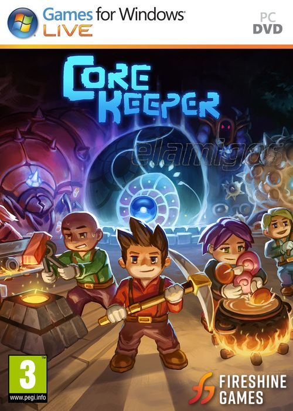

Core Keeper v 1.0 443 MB
Género: Acción, Mundo abierto, Parkour
Explora una caverna infinita llena de criaturas, reliquias y recursos en una
aventura minera de tipo «sandbox» para 1-8 jugadores. Extrae recursos,
construye, lucha, fabrica y cultiva para desentrañar el misterio del antiguo
Núcleo.